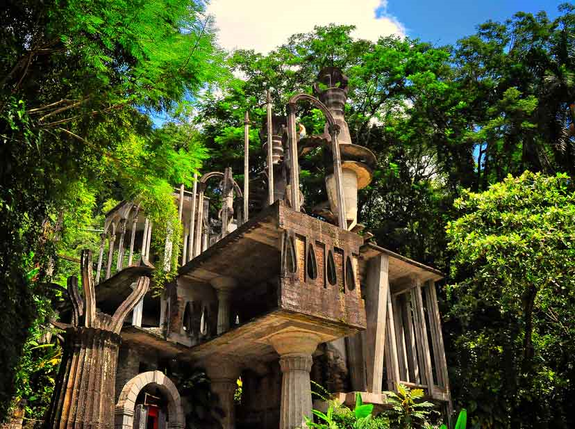
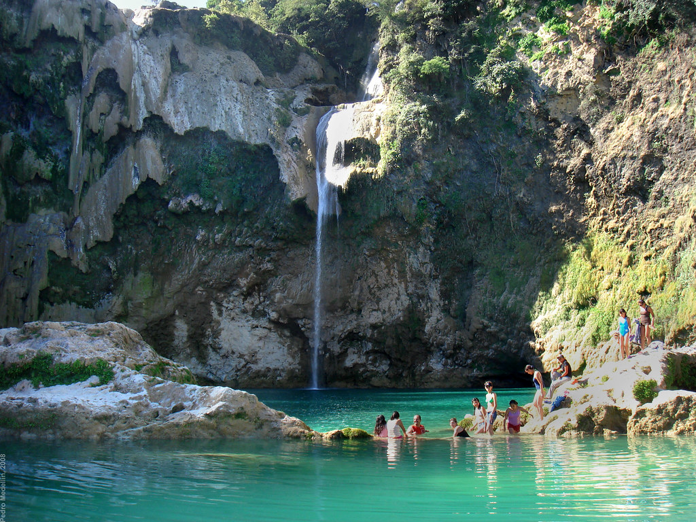
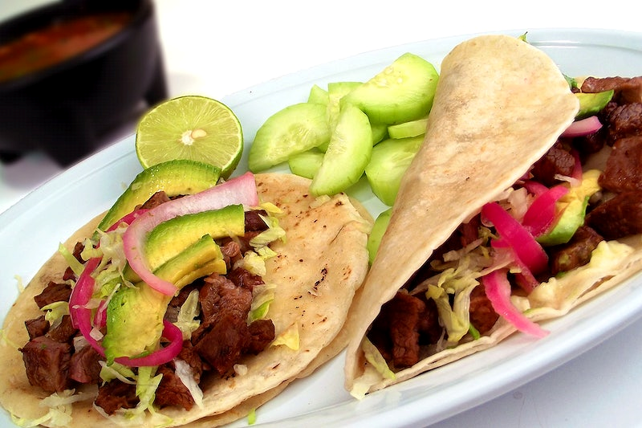

Mexico is noticeably different for its places, food and people. Speaking of place with us we will take you not to the common places but beautiful scenery where you can see unique ruins and also try the special foods in that area. We are not only going take you to ruins but to special waterfalls that normally you would need to know of someone who can make there way there.
Of course, you will have nothing to worry about since we will always provide you with a place to stay as well as a tourist guide or all the necessary information for you to fully enjoy your stay in the most exclusive and exotic places Mexico has to offer.
Dia de Los Muertos is so big and special that even the movie Mama Coco came out. We will take you there specially on Dia De Los Muertos. We want you to have a trip were you can connect with the culture have special foods that are only in those days. Without a doubt we will make sure each holiday is unforgettable.

Please take a look around here and ask us for our accessible deals and we will make sure you take that trip you have always wanted.
